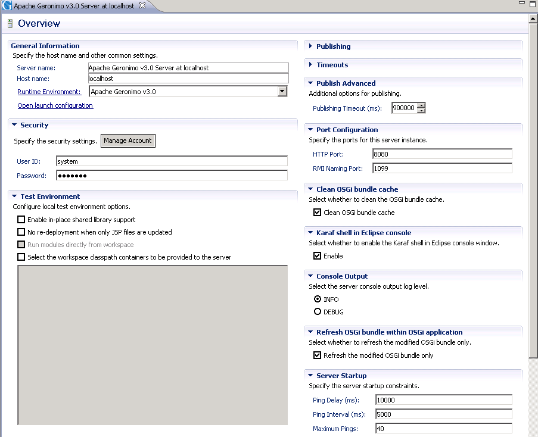

此页面描述了用于配置开发环境的各种选项。
编辑服务器配置
为了编辑服务器的配置，请在“ 服务器”视图中双击服务器，以打开服务器概述，如下所示。

- 一般信息
编辑此部分中的字段以更改服务器名称或将Geronimo Server与其他Apache Geronimo Server Runtime关联，或更改与Geronimo Server关联的主机名。 - 安全
默认的用户ID是带有密码管理器的 系统 。如果服务器安装使用在.propeties文件领域中定义的另一组凭据geronimo-admin ，相应地更改这两个字段。在这两个字段中指定的凭据用于检测服务器状态和应用程序的部署/取消部署。您可以单击“ 管理帐户”来管理本地服务器上的用户，例如更改默认用户的密码system ，将新用户添加到admin组并删除现有用户。 - 测试环境
选择本节中的选项可更改本地测试环境的默认配置。有关JSP重新部署选项的更多信息，请参见应用程序的快速调试JSP 。 - 出版
所有服务器均使用默认发布设置。通过选择从不自动发布选项，可以将服务器配置为不自动发布 。可以通过提供新的发布间隔来更改发布间隔（15秒）。 - 超时时间
编辑“ 开始”和“ 停止”超时以更改完成这些操作的时间限制。 - 发布高级
该字段指定发布的时间限制。 - 端口配置
默认的HTTP和RMI端口分别为8080和1099。如果您的服务器安装使用其他HTTP和/或RMI端口，请相应地编辑这些值。在此处更改值不会更改关联的Geronimo Server运行时中的相应端口。 - 清洁OSGi捆绑包缓存
选择在服务器启动时是否清理OSGi捆绑包缓存。 - Eclipse控制台中的Karaf Shell
选择服务器启动时是否在Eclipse控制台窗口中启用Karaf shell。 - 控制台输出
默认服务器控制台输出日志级别为INFO 。如果要启用调试输出到控制台，请选择DEBUG 。 - 刷新OSGi应用程序中的OSGi捆绑包
选择是否仅刷新修改的OSGi捆绑包。如果要刷新修改后的捆绑包而不是整个应用程序，请确保选中此选项。 - 服务器启动
从eclipse中启动服务器时，此部分下的设置控制ping线程，该ping线程轮询服务器以检测服务器状态。
- ping延迟指定ping线程在轮询服务器之前将等待的时间。
- ping间隔控制连续两次ping之间的时间。对于远程服务器，Ping间隔控制连续两次ping之间的时间以更新服务器状态。
- 最大Ping是ping线程将轮询服务器以检测成功启动的次数。如果无法确认服务器启动，则ping线程将停止服务器。
其他配置